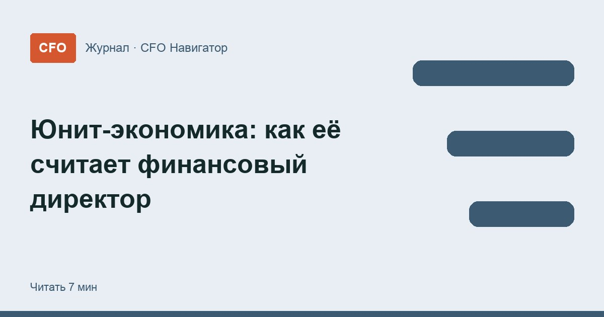

Юнит-экономика: как её считает финансовый директор

Компания может расти в выручке и при этом терять деньги на каждом новом клиенте. Юнит-экономика показывает, зарабатывает ли бизнес на одной единице продаж. Разбираем, что считает финансовый директор, как не ошибиться с юнитом и что делать с результатом.
Что такое юнит-экономика
Юнит-экономика — это расчёт прибыли или убытка на одну единицу бизнеса: одного клиента, один заказ или одну подписку. Вместо общего отчёта о прибылях и убытках финансовый директор смотрит на «молекулу» бизнеса и проверяет, сходятся ли цифры на ней.
Логика простая: если на одном юните компания теряет деньги, рост продаж только увеличит убыток. Если зарабатывает — дальше вопрос в том, хватит ли этого заработка на постоянные расходы. Его решают через точку безубыточности.
Как выбрать юнит
Юнит — то, за что компания получает деньги и что можно посчитать поштучно. Выбор зависит от модели бизнеса:
| Бизнес | Что обычно берут за юнит |
|---|---|
| Интернет-магазин | Заказ или покупатель |
| Сервис по подписке | Подписчик за месяц или за всё время |
| Онлайн-школа | Студент, купивший курс |
| Кафе, салон, клиника | Чек или постоянный клиент |
| Производство | Единица продукции или партия |
Главные показатели
Как посчитать юнит-экономику
- 1Юнитклиент, заказ или подписка
- 2Маржа на юнитцена минус переменные расходы
- 3CACмаркетинг ÷ число новых клиентов
- 4ВыводLTV против CAC и срок окупаемости
- Маржинальный доход на юнит — цена минус переменные расходы на эту единицу: себестоимость товара, доставка, упаковка, комиссии платёжных сервисов и площадок.
- CAC (стоимость привлечения клиента) — расходы на маркетинг и продажи за период, делённые на число новых клиентов за тот же период.
- LTV (доход с клиента за всё время) — маржинальный доход с одного клиента за весь срок, пока он покупает. Для оценки удобнее считать LTV по марже, а не по выручке.
- Срок окупаемости клиента — через сколько покупок или месяцев маржа с клиента покроет затраты на его привлечение.
Итоговый вопрос один: больше ли LTV, чем CAC, и с каким запасом. Запас нужен, потому что из этой разницы ещё оплачиваются аренда, оклады управленцев и другие постоянные расходы.
Пример на условных цифрах
Интернет-магазин товаров для дома. Средний заказ — 3 000 ₽, закупка товара, упаковка и доставка — 1 800 ₽. За месяц на рекламу потратили 600 000 ₽ и получили 400 новых покупателей. В среднем покупатель делает три заказа.
- Маржинальный доход с заказа: 3 000 − 1 800 = 1 200 ₽.
- CAC: 600 000 ÷ 400 = 1 500 ₽ на одного нового покупателя.
- LTV по марже: 1 200 × 3 заказа = 3 600 ₽.
- Разница: 3 600 − 1 500 = 2 100 ₽ с каждого покупателя остаётся на постоянные расходы и прибыль.
- Срок окупаемости: первый заказ даёт 1 200 ₽ — меньше CAC. Привлечение окупается только на втором заказе.
Вывод для финансового директора: бизнес на клиенте зарабатывает, но если покупатели перестанут возвращаться, каждый новый клиент будет приносить 300 ₽ убытка. Значит, следить нужно не только за рекламой, но и за повторными покупками.
Типичные ошибки в расчёте
- Считать LTV по выручке. Выручка с клиента выглядит внушительно, но платить за рекламу можно только из маржи.
- Забыть часть переменных расходов. Комиссии, возвраты, бесплатная доставка и скидки по промокодам съедают маржу незаметно.
- Брать средние по всем каналам. Один рекламный канал может окупаться, а другой — нет. CAC стоит считать отдельно по каждому.
- Верить LTV без истории. Пока бизнес молодой, число повторных покупок — оценка, а не факт. Её стоит проверять на реальных данных по мере накопления.
- Путать прибыль и деньги. Клиент может окупиться «на бумаге» через полгода, а реклама оплачивается сегодня. Это прямой путь к кассовому разрыву.
Как CFO использует юнит-экономику
- Бюджет на маркетинг. Зная допустимый CAC, финансовый директор ставит отделу продаж понятный лимит на привлечение клиента.
- Цены и скидки. Видно, сколько маржи остаётся после акции и не уходит ли юнит в минус.
- Выбор продуктов и каналов. Деньги перераспределяют туда, где разница между LTV и CAC больше.
- Разговор с собственником и инвестором. Расчёт на одном клиенте объясняет, почему рост выручки ещё не равен росту прибыли.
Сама по себе юнит-экономика — упрощённая модель. Финансовый директор переносит её показатели в финансовую модель компании и проверяет на разных сценариях: что будет, если реклама подорожает или клиенты станут покупать реже.
Где научиться считать
Юнит-экономику полезно понимать не только финансистам, но и владельцам бизнеса. Ниже — программы для финансовых директоров, которые школы адресуют в том числе собственникам; больше вариантов — в подборке курсов для собственников бизнеса. Состав модулей уточняйте на сайте школы.
 Директор по экономике и финансам + ИИ
Директор по экономике и финансам + ИИ- Цена
- 165 200 ₽
- Срок
- 6 месяцев
- Документ
- Диплом о профессиональной переподготовке
 Финансовый директор
Финансовый директор- Цена
- 192 000 ₽
- Срок
- 8 месяцев
- Документ
- Диплом о профессиональной переподготовке
 Финансовый директор
Финансовый директор- Цена
- 42 500 ₽
- Срок
- —
- Документ
- Диплом о профессиональной переподготовке
 Дебиторская задолженность: как CFO ускоряет оплату клиентов
Дебиторская задолженность: как CFO ускоряет оплату клиентов Как учиться на финансового директора без отрыва от работы
Как учиться на финансового директора без отрыва от работы Первые 90 дней финансового директора в новой компании
Первые 90 дней финансового директора в новой компании